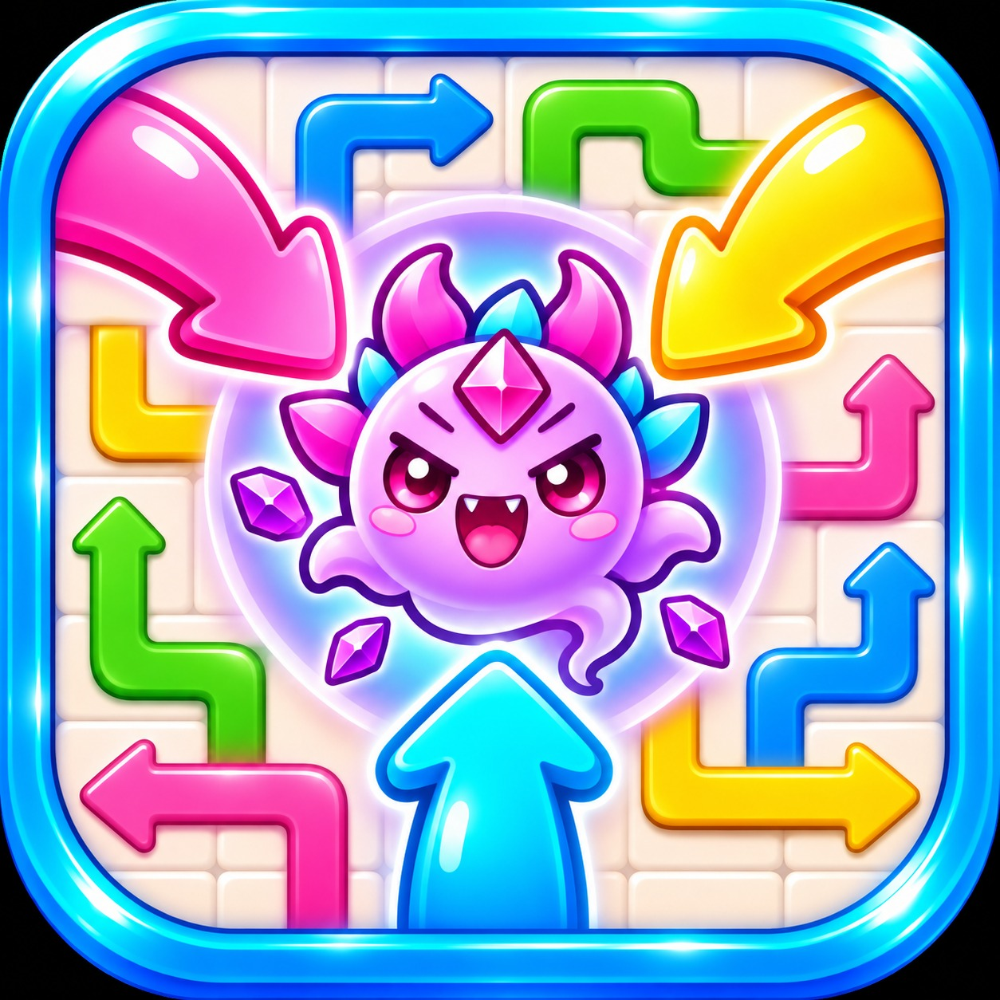

Modları karşılaştır, başlangıç rehberini izle veya kısa mod tanıtımlarını indir.
İzlemek için bir video seç.
Bu paket yerel inceleme içindir; video veya reklam yayını yapılmadı. Mağaza bağlantısı uydurulmadı. Eski onaylı videolar korunur.